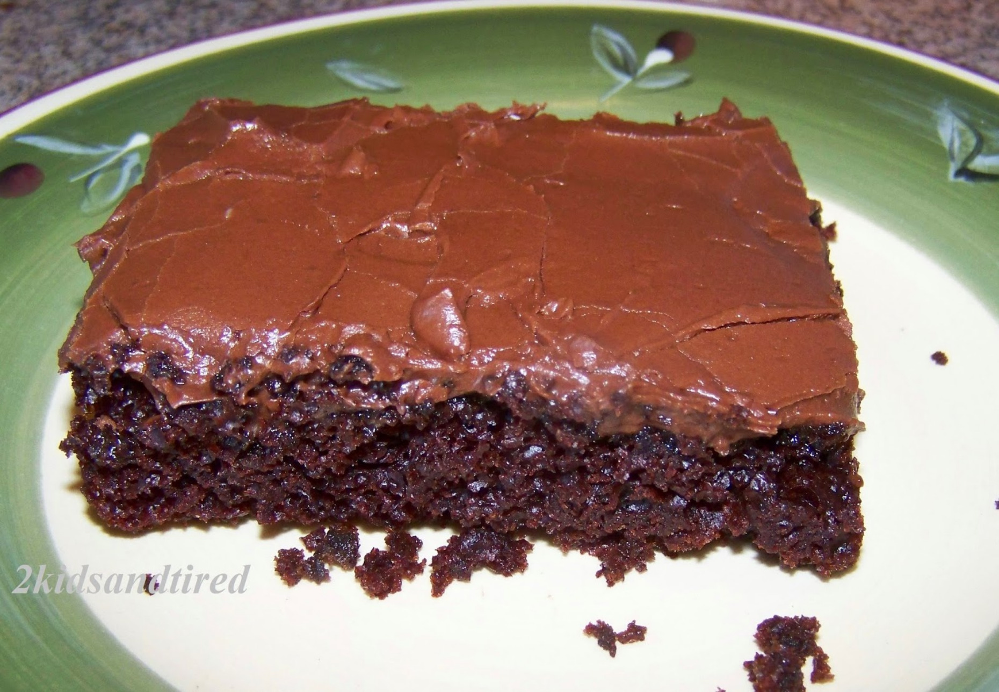

Steve's Chocolate Cake

Description:
This is the recipe for my favorite chocolate cake.
My mom makes this for me every birthday, and I love
it just as much now as when I was 3. The cake is
increadibly moist, and has a great crumb and texture.
The recipe is very simple and can be whipped up quickly
for any occasion.
Ingredients:
Dry Ingredients:
- Flour - 3 Cups
- Sugar - 2 Cups
- coco - 1/2 Cup
- Baking Soda - 2 teaspoons
- Salt - 1 teaspoon
Wet Ingredients
- Cold Water - 2 Cups
- Vegetable Oil - 3/4 Cup
- Vinager - 2 Tablespoons
- Vanilla Extract - 1 teaspoon
Recipe:
- Preheat oven to 350°
- Mix the dry ngredients in a medium bowl.
- Mix the wet ingredients in a large bowl.
- Mix the dry ingredients into the wet ingredients until combined but not yet smooth.
- Pour into an oiled 9x13 cake pan and smooth the top.
- Bake for 40 minutes or until done.
- let cool and enjoy!